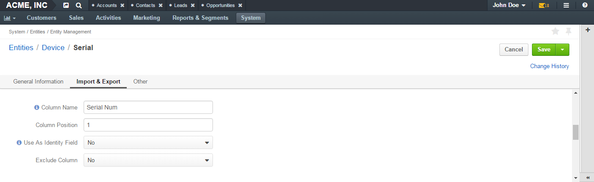
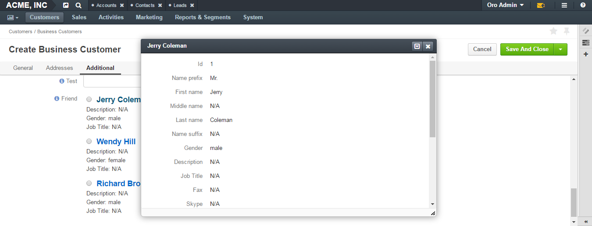
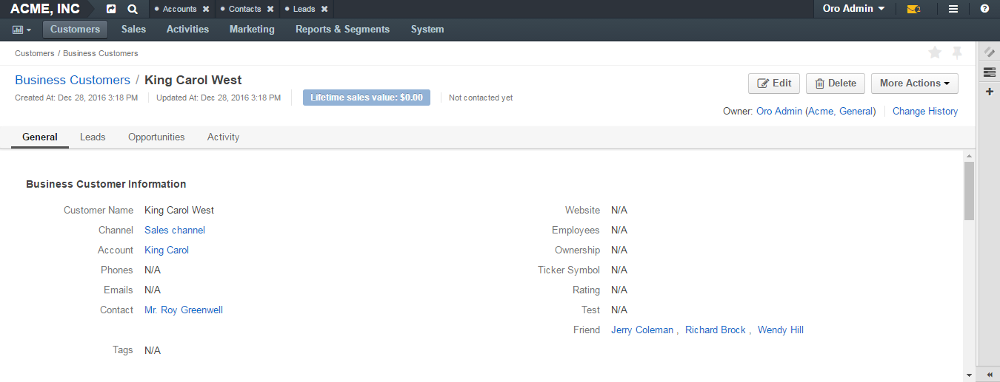

Entity Field Properties
The creation of an entity field takes two steps. In step 1, you specify just the very basic properties: name, field type and field storage type. In step 2, you specify more advanced properties, some of which can be field-type-related.
Basic Entity Field Properties
General Information Section

| Field | Description |
|---|---|
| Field Name | Mandatory. Type a name of the field that will be used to refer to it in the system. This name must be unique within an entity. It cannot be a reserved SQL word , nor a reserved PHP word. |
| Storage Type | Mandatory. Select how the field is stored in the system. There are two options:
|
| Type | Mandatory. Select a field type from the list. The following types are available:
For the help on selection the field that is right for your purposes, see the Entity Field Types guide. |
Advanced Entity Field Properties
Properties that can be defined may vary subject to the chosen field type.
The following sections provide descriptions of common properties (they are applicable to most of the types), and peculiarities of specific types.
Common Properties
General Information Section

Fields Name, Storage Type, Type that you filled in when specifying information for basic entity field properties (see the Basic Entity Field Properties section) are still present on the page but they are read-only now, i.e you cannot change their values.
There are two new fields in this section:
| Field | Description |
|---|---|
| Label | Mandatory. Type a label that will be used for referring to the field on the interface. By default, the label is the same as Name. |
| Description | Type a short but meaningful description that will appear as a field tooltip on the interface. |
Import and Export Section
| Field | Description |
|---|---|
| Column Name | Type a name that will be used for identifying the field in the .csv file with entity records. If left empty, the Label value will be used for identifying the field when you export entity records. |
| Column Position | Type a number that corresponds to the position of this field in the .csv file that contains entity records. |
| Exclude Column |
|
Other

| Option | Description |
|---|---|
| Available in Email Templates | If this option is set to Yes, values of the field can be used for creating email patterns. |
| Contact Information | Possible values are:
|
| Show on Grid | If set to Yes, the field will be displayed in a separate column of the respective grid. |
| Show Grid Filter | Not available for serialized fields. If set to Yes, a corresponding filter will be added to grid filters by default. |
| Show on Form | If set to Yes, the field value appears as editable on record edit pages. |
| Show on View | If set to Yes, the field is displayed on record view pages. |
| Priority | Defines an order of custom fields on entity record view, edit, and create pages, and on the respective grid. Custom fields are always displayed one after another, usually below the system fields. If no priority is defined or the defined priority is 0, the fields will be displayed in the order in which they have been added to the system. The fields with a higher priority (a bigger value) will be displayed before the fields with a lower priority. |
| Searchable | If set to Yes, the entities can be found with the search in OroCRM/OroCommerce by values of this field. |
| The Search Result Title | If set to Yes, the field value will be included into the search result title. |
| Auditable | Not available for serialized fields. If set to Yes, the system will log changes made to this field values when users edit entity records. |
| Applicable Organizations | Defines for what organizations the custom field will be added to the entity. All is selected by default. Clear the All check box to choose specific organizations from the list. |
Caution
If the Show on Form value has been set to No, there will be no way to create/update the field values from OroCRM/OroCommerce. Thus, such configuration is reasonable only for data which is uploaded to the system during a synchronization.
Type-Related Properties
Decimal
Decimal fields have two additional optional properties that can be defined in the General section:
| Field | Description |
|---|---|
| Precision | Maximum number of digits. E.g. 15.252 has precision 5. And 1.12 has precision 3. |
| Scale | Maximum number of decimal places. E.g. 15,252 has scale 3. And 1.12 has scale 2. |
String
String fields have an additional optional property in the General section:
| Field | Description |
|---|---|
| Length | The number of characters in the string. It is a number from 1 to 255. |
Text
Important
Fields of the Text type are not displayed on a grid, so Show on Grid and Show Grid Filter properties cannot be defined for them.
File
File fields have an additional property in the General section:
| Field | Description |
|---|---|
| File Size | Mandatory. The maximum file size allowed for an upload (in MB). |
Important
- Which file extensions will be allowed for upload is defined by the system settings. See Upload settings section.
- Fields of the File type can be only of the Column table storage type.
- These fields cannot be defined as identity fields for the export / import operations.
- Fields of the File type are not displayed on a grid, so Show on Grid and Show Grid Filter properties cannot be defined for them.
Warning
Auditing is not available for actions with the entity fields of the File type.
Image
Image fields have three additional properties in the General section:
| Field | Description |
|---|---|
| File Size | The maximum file size allowed for an upload (in MB). |
| Thumbnail Width | The image thumbnail width in pixels. |
| Thumbnail Height | The image thumbnail height in pixels. |
Important
- Which file extensions will be allowed for upload is defined by the system settings. See Upload settings section.
- Fields of the Image type can be only of the Column table storage type.
- These fields cannot be defined as identity fieldsfor the export / import operations.
- Fields of the Image type are not displayed on a grid, so Show on Grid and Show Grid Filter properties cannot be defined for them.
Warning
Auditing is not available for actions with the entity fields of the File type.
Select
Select fields have an additional property in the General section:
| Field | Description |
|---|---|
| Options | Define values that will be included in the select list. To add an option, click the +Add button. To set the default option, select the check box next to the option. Click the Do not set as Default link to clear the Default check boxes. To move an option up or down on the list, drag the To delete an option, click the x icon next to the option. Please note that if you delete an option, it will be removed from all the entity records in the system where it is currently present. |
 Move icon next to the option.
Move icon next to the option.Important
- The fields of the Select type can be only of the Column table storage type.
- These fields cannot be defined as identity fields for the export / import operations.
Warning
When editing system select fields, note that some options could be defined as system and cannot be deleted.
Multi-Select
Multi-select fields have an additional property in the General section:
| Field | Description |
|---|---|
| Options | Define values that will be included in the multi-select list. To add an option, click the +Add button. To set the default option, select the check box next to the option. You can set several default options. Click the Do not set as Default link to clear the Default check boxes. To move an option up or down on the list, drag the To delete an option, click the x icon next to the option. Please note that if you delete an option, it will be removed from all the entity records in the system where it is currently present. |
Important
- Fields of the Multi-Select type can be only of the Column table storage type.
- These fields cannot be defined as identity fields for the export / import operations.
Warning
When editing system select fields, note that some options could be defined as system and cannot be deleted.
Many to many
Many to many fields have additional properties in the General section:
| Field | Description |
|---|---|
| Target Entity | Mandatory. Select the entity which record(s) will be tied with records of the current entity. |
| Related Entity Data Fields | Mandatory. Select those fields of the entity selected in Target Entity which contain information that you want to see on the master entity record edit page. These could be a couple of important details in edition to the title which give you the most important information about the related entity record. Hold the Ctrl key to choose several fields. |
| Related Entity Info Title | Mandatory. Select the fields of the entity selected in Target Entity by which the users can identify the related entity record. These fields serve as a title to the related entity record on the master entity pages. Choose these fields carefully. It would be a good idea to select a related entity name or similar information. On the view page of the master entity record, these fields will appear as links to the corresponding related entity record. On the edit page of the master entity record, you will see these fields as titles of the section that contains information selected in Related Entity Data Fields . Hold the Ctrl key to choose several fields. |
| Related Entity Detailed | Mandatory. Select those fields of the entity selected in Target Entity which contain additional information that you want to see on the master entity record edit page. The values of the fields selected will be available in the dialog box that appears when you click the title of the realted entity on the master page edit page. Hold the Ctrl key to choose several fields. |
Important
- Many to many relation fields can be only of the Column table storage type.
- Many to many relation fields cannot be defined as identity fields for the export / import operations.
- Many to many relation fields type are not displayed on a grid, so Show on Grid and Show Grid Filter properties cannot be defined for them.
One to many
One to many fields have additional properties in the General section:
| Field | Description |
|---|---|
| Target Entity | Mandatory. Select the entity which record(s) will be tied with records of the current entity. |
| Related Entity Data Fields | Mandatory. Select those fields of the entity selected in Target Entity which contain information that you want to see on the master entity record edit page. These could be a couple of important details in edition to the title which give you the most important information about the related entity record. Hold the Ctrl key to choose several fields. |
| Related Entity Info Title | Mandatory. Select the fields of the entity selected in Target Entity by which the users can identify the related entity record. These fields serve as a title to the related entity record on the master entity pages. Choose these fields carefully. It would be a good idea to select a related entity name or similar information. On the view page of the master entity record, these fields will appear as links to the corresponding related entity record. On the edit page of the master entity record, you will see these fields as titles of the section that contains information selected in Related Entity Data Fields . Hold the Ctrl key to choose several fields. |
| Related Entity Detailed | Mandatory. Select those fields of the entity selected in Target Entity which contain additional information that you want to see on the master entity record edit page. The values of the fields selected will be available in the dialog box that appears when you click the title of the realted entity on the master page edit page. Hold the Ctrl key to choose several fields. |
Important
- One to many relation fields can be only of the Column table storage type.
- One to many relation fields cannot be defined as identity fields for the export / import operations.
- One to many relation fields type are not displayed on a grid, so Show on Grid and Show Grid Filter properties cannot be defined for them.
Example
Let us create a field Friend that relates to contacts that were recommended by a specific business customer. This is a ‘one to many’ relation, as one business customer may advise many friends.
Our Friends field has the following values:
- Target EntitySelect Contact.
- Related Entity Data FieldsSelect Description, Gender, and Job Title.
- Related Entity Info TitleSelect First name and Last name.
- Related Entity Detailed Select all the fields available.
Now we create a business customer:
The following grid appears once you have clicked the +Add button against the Friend field on the record edit or ceate page:

It contains all the fields defined for the Related Entity Data Fields.
We have added three contacts. We have added three contacts. The title contains properties defined for the Related Entity Info Title. Related Entity Data Fields are displayed for each record below the link.

If you click the title of one of the opportunities, a dialog box with all the details specified in the Related Entity Detailed appears.
The Related Entity Info Title properties are also used to represent the related contacts on the view page.
Many to one
Many to one fields have additional properties in the General section:
| Field | Description |
|---|---|
| Target Entity | Mandatory. Select the entity which record(s) will be tied to the records of the current entity. |
| Target Field | Mandatory. Select the field of the entity selected in Target Entity by which the entity records will be tied. |
Important
- Many to one relation fields can be only of the Column table storage type.
- Many to one relation fields cannot be defined as identity fields for the export / import operations.
- Many to one relation fields type are not displayed on a grid, so Show on Grid and Show Grid Filter properties cannot be defined for them.
Example
Let us create a relation ‘Business Unit’ and specify:
- Target EntitySelect Business Unit.
- Target FieldSelect Name.
Now, when creating/editing an opportunity record, you can choose a related business unit from the list. Business unit records in the list are represented by their Name values.


Links
For the information about entity fields, see the Entity Fields guide.
For the overview of the entities, see the Entities guide.